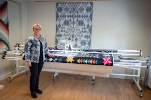

Maskin utbudet hos oss
Quiltbutiken Tygshopen har över 30 års erfarenhet av quilting. När du köper en quiltmaskin från Handi Quilter av Tygshopen så får du en fantastisk maskin och tillgång till vår stora kunskap inom quilting. Det ger dig alla förutsättningar att lyckas med dina framtida projekt.
Klicka på bilden ovan för att se en video om HQ AMARA STAND UPP på YouTube.
Klicka på bilden ovan för att se en video om HQ AMARA 20 på YouTube.
Maskinerna är märkta Janome men tillverkade av HandiQuilter.
Inkl. 12" frame med hjul, hammock, extra tillbehör som ruler bas med linjalfoten, glide och squarefot.
149 900 kr (5-års garanti och hämtning i Katrineholm). Ord.pris 180 000 kr.
Önskas leverans tillkommer extra kostnad – SÅLD
Sitt down-modell.
79 900 kr (5-års garanti och hämtning i Katrineholm). Ord.pris 99 900 kr.
Önskas leverans tillkommer extra kostnad.
Maskinen står uppställd på övervåningen i vår kurslokal. Du bokar tid för demonstration via: eva@tygshopen.com
Det är ett bra sätt att ta reda på om det är en maskin som passar dig.
Tråd, baksidestyg och mellanlägg köper du hos oss. Det är för att säkerställa kvalitén och för att få ett bra resultat.
Utbudet är från den billigaste symaskinen, till den enkla symaskinen, till ”Top of the Line” avancerade sy- och brodermaskiner, även overlock.
Tygshopen är en licensierad återförsäljare! Vi deltar i utbildningar och kurser som arrangeras. Tygshopen säljer samtliga symaskiner, dataprogram och tillbehör från Husqvarna Viking, Janome, Baby Lock och Bernina.
Hos oss köper ni inte bara en produkt utan kunskap, inspiration och sömnadsglädje!
Kontakta oss för konsultation.